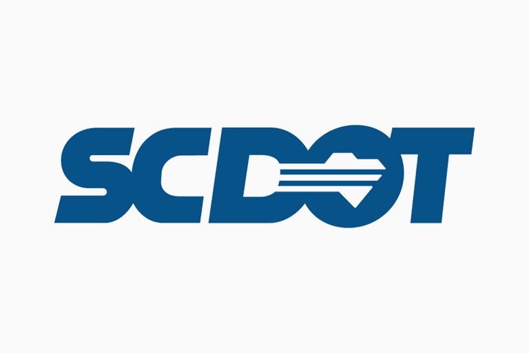

Ryan Caudill
Senior Computer Science student at the University of South Carolina with a concentration in AI and a minor in Spanish.
Ryancaudill04@gmail.com | (704) 582-1842
Projects
Skills
Tools
- Git/GitHub
- MATLAB
- SQL Server
- PostgreSQL
- Docker
- TensorFlow
- Azure
- Raspberry Pi
- Ubuntu
- Hadoop
Languages
- Java
- C++
- C#
- Haskell
- Python
- Bash
- Powershell
- Swift
- TypeScript
- Rust
Frameworks
- FastAPI
- JavaFX
- Django
- .NET
- LangChain
- React Native
Education
University of South Carolina
Columbia, SC | Expected Graduation: May 2026
B.S. in Computer Science | Artificial Intelligence Concentration | Spanish Minor
Major GPA: 3.55
Awards: Dean's List, Capstone Scholar
Relevant Coursework: Computer Networking, Data Structures and Algorithms, Software Engineering, Robotics, Artificial Intelligence, Machine Learning Systems, Operating Systems, Big Data Analytics
Work Experience
Undergraduate Research Assistant
University of South Carolina | Columbia, SC | Oct 2025 – Present
- Ensured precise synchronization of four camera streams for accurate multi-view data capture, improving reliability and timing consistency across devices.
- Developed a Qt-based GUI to display live feeds from four cameras and provide interactive controls for starting/stopping cameras and IMU data processing
Software Engineering Teaching Assistant
University of South Carolina | Columbia, SC | Jan 2024 - Present
- Designed and implemented comprehensive system architectures for a Language Learning Application, Degree Planning Software, Music Creation Program, and Digital Escape Room in JavaFX
- Provided strategic leadership to 32 development teams, setting a clear direction and fostering collaboration to meet key project milestones effectively and on time.
- Facilitated detailed bi-weekly code reviews as part of 2-week sprint cycles, ensuring high-quality code, adherence to best practices, and consistent progress toward project objectives.

Software Engineer Intern
South Carolina Department of Transportation | Columbia, SC | May 2025 – Aug 2025
- Automated OSHA injury report submissions by transforming SQL Server data into JSON and integrating with the OSHA ITA API, cutting report time from 7 days to 15 seconds
- Developed a Blazor web app with spreadsheet-style SQL Server editing, improving data accuracy and enabling faster updates by non-technical staff.
- Built a LangChain demo in Python showcasing LLM Agents for natural language SQL query generation.
- Maintained and modernized legacy web applications, improving usability for internal teams.
Resume
Download my complete resume to learn more about my background, experience, and qualifications.
Microsoft Word format • Updated 2025
Contact
Email: Ryancaudill04@gmail.com
LinkedIn: linkedin.com/in/ryan-caudill-b8a0a5313
GitHub: github.com/RyanCaudill04